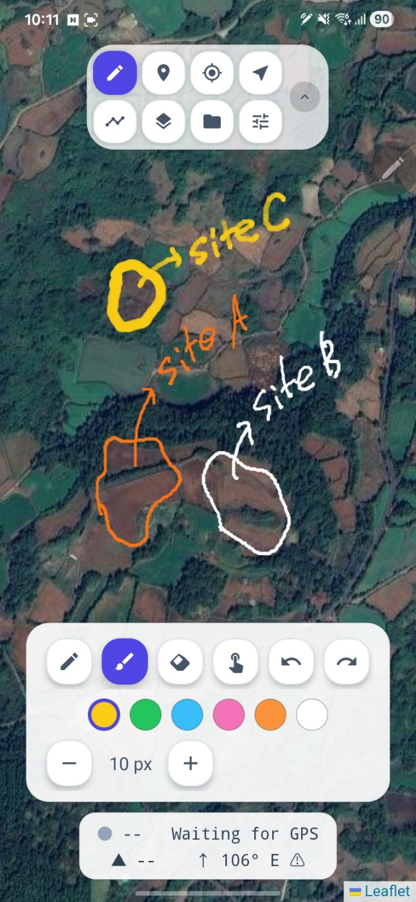
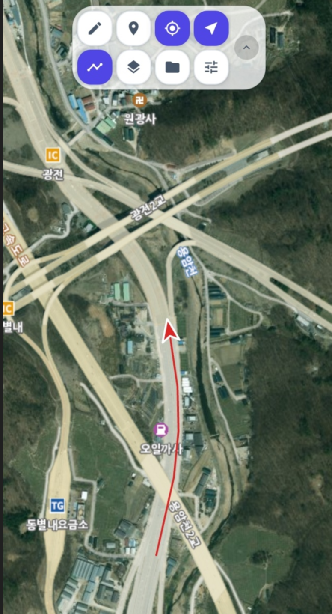
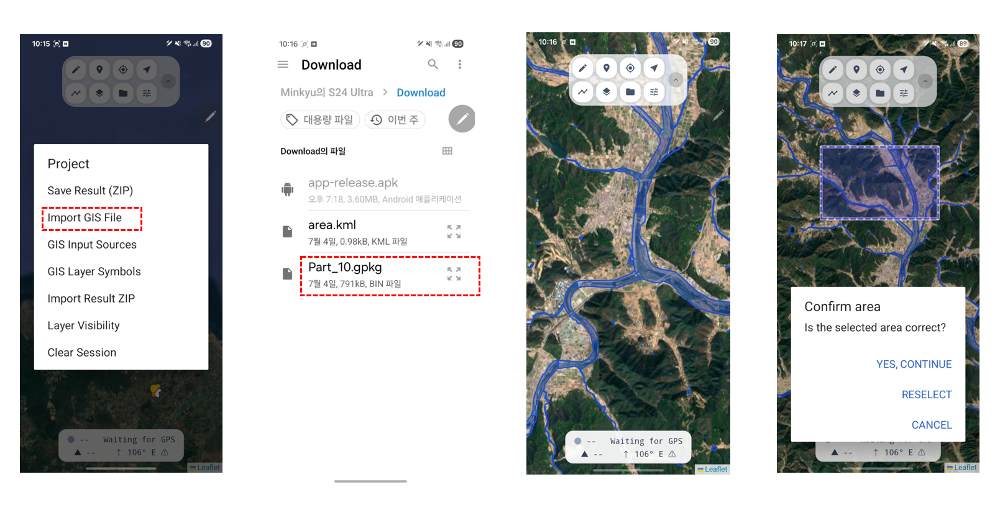
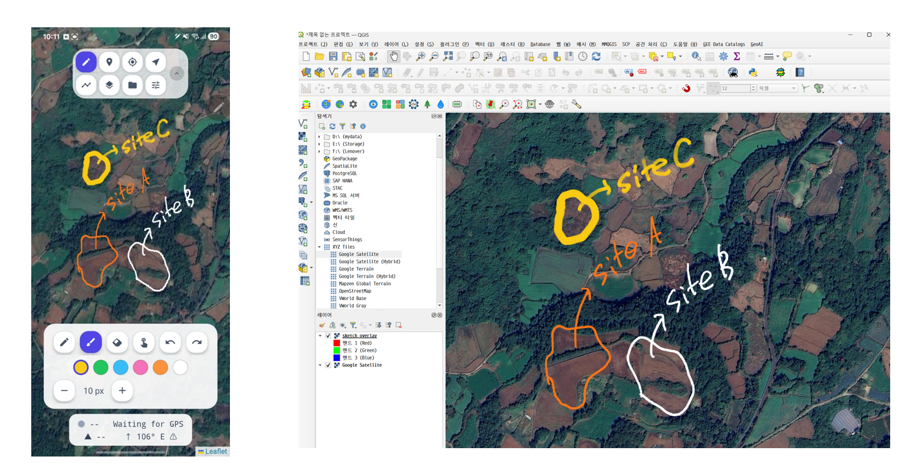

Sketch-first field survey
GeoTrace turns your tablet into a field notebook. Annotate the map by hand as you survey — your strokes stay pinned to real map coordinates.
- Pen, highlighter and eraser with adjustable color and thickness
- Strokes are anchored to the map — they stay in place when you zoom or pan
- Automatic stylus detection; finger drawing for devices without a pen
- Fingers pan and zoom, the pen draws — the two never conflict

Points & GPS tracks
- Create survey points at your location or by tapping the map
- Record your route in real time, with a heading compass and signal status
- Keeps recording with the screen off or while using other apps

Worldwide base maps
Switch base maps for anywhere in the world — satellite, hybrid and more are built in.
- Built-in: Google Satellite, Google Hybrid, ESRI World Imagery
- Add your own XYZ tile sources by importing an XML file
- Overlay a labeled layer on top of imagery
Get a ready-made set of worldwide sources and import it in the app (base-map menu → Import from XML):
Download world map sources (XML)Tip: tile providers have their own terms of service. Bulk offline download of Google or OpenStreetMap tiles is not permitted — use them for on-screen display, and download offline packs only from sources you are licensed to use.
GIS files & offline maps
- Load GeoPackage (GPKG) and KML — coordinate systems worldwide are reprojected automatically
- Style each layer: color, opacity, outline, labels (tap a label to view its content)
- Download an offline map area (tap two corners, pick a zoom range) and reuse it with no connection

Round-trip to QGIS
- Export results as a ZIP containing a GeoPackage
- Points, tracks and sketch strokes come back as vector layers in QGIS
- Reopen the app the next day to resume your previous session
| File | Contents |
|---|---|
field_result.gpkg | survey_point, route_line, sketch_stroke (EPSG:3857) |
sketch_overlay.png | Georeferenced sketch image |
